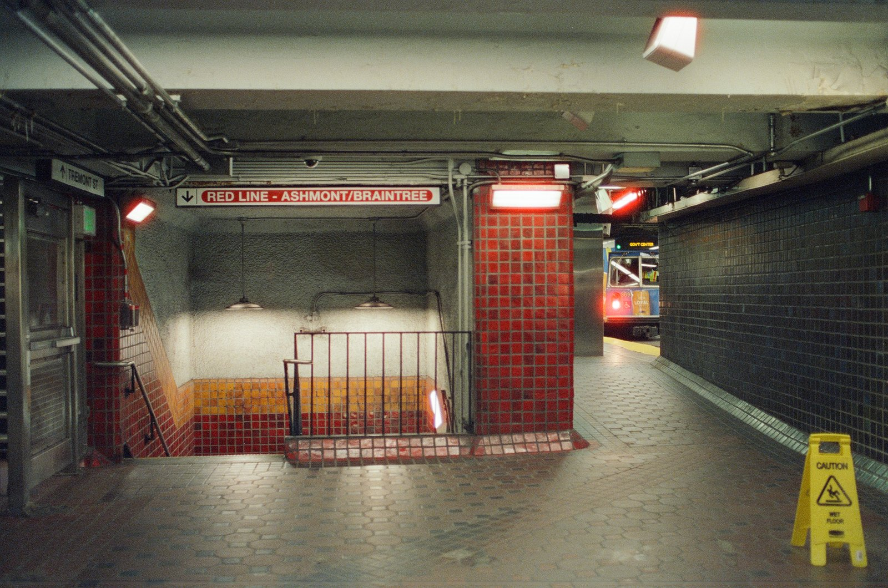
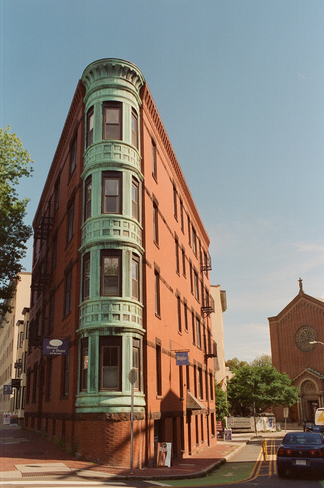
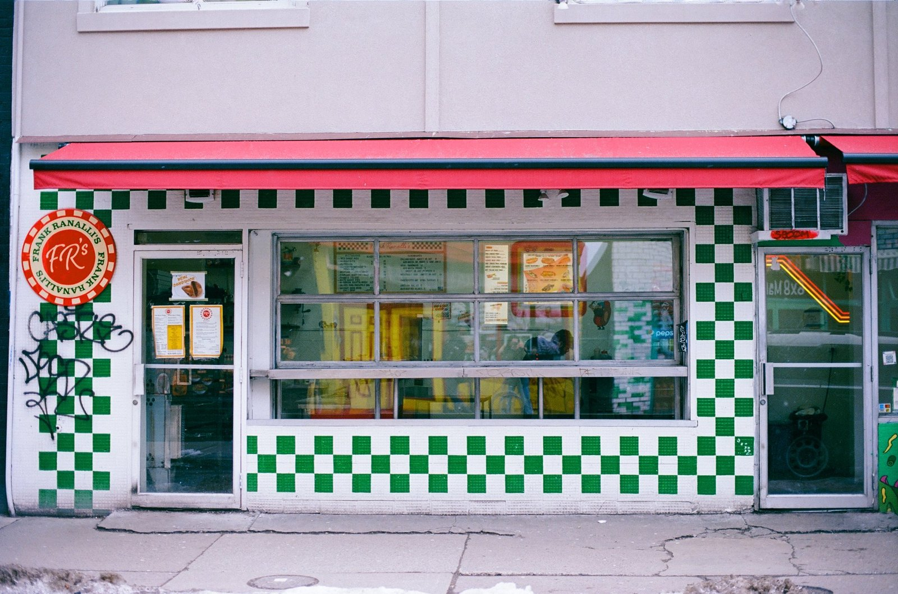
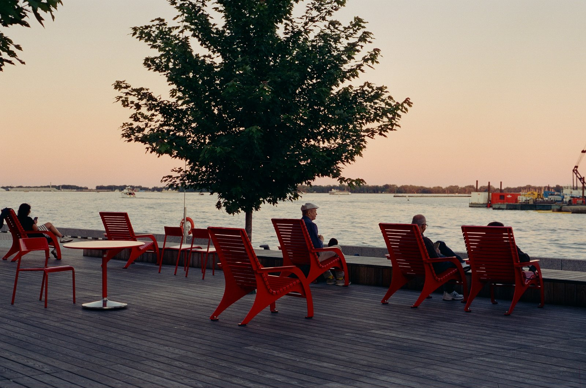
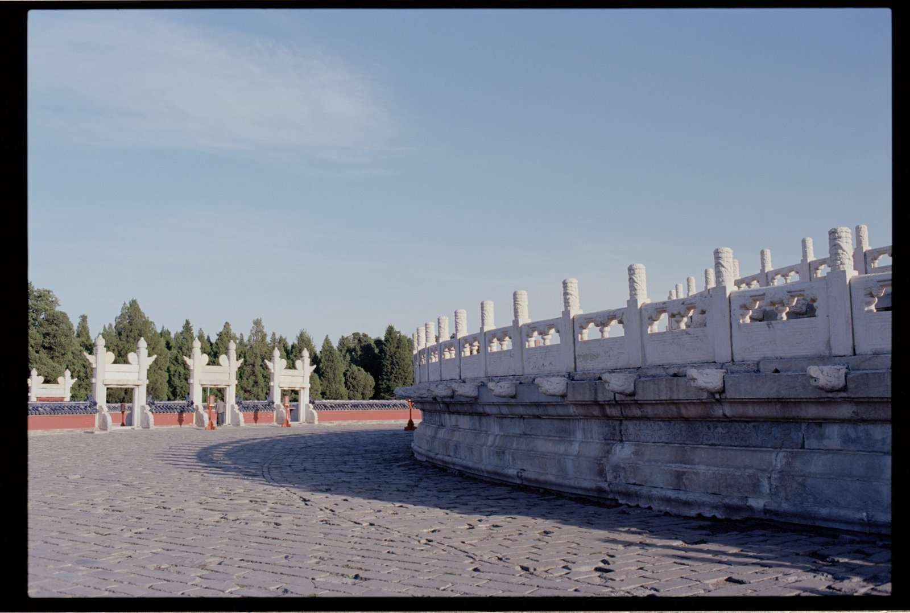
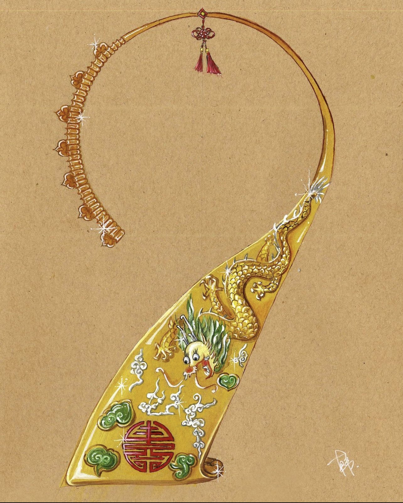
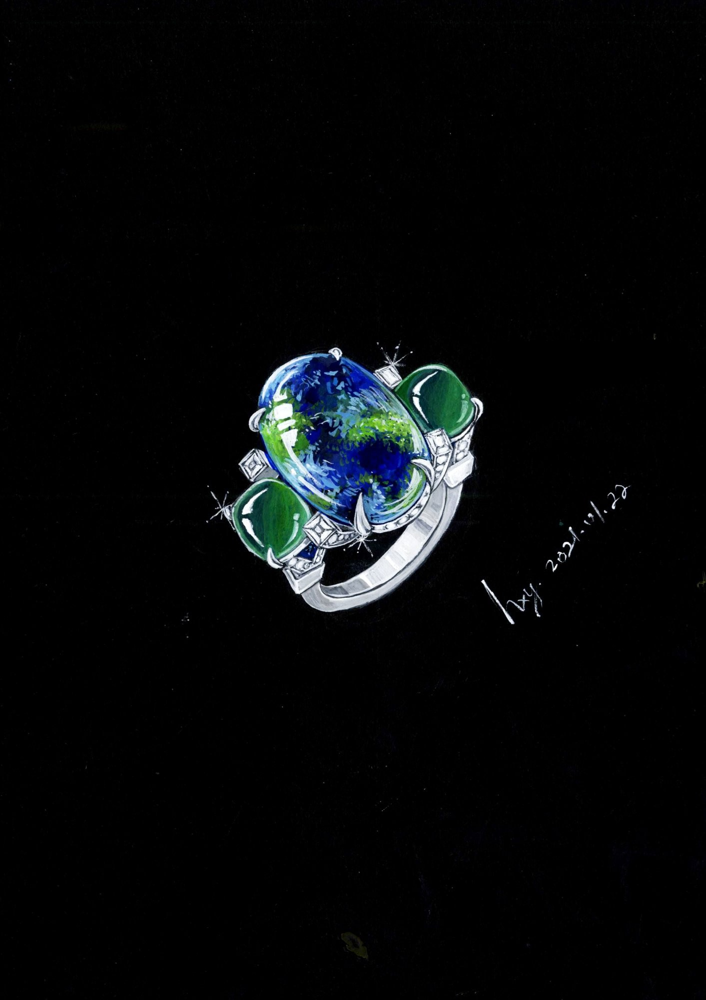
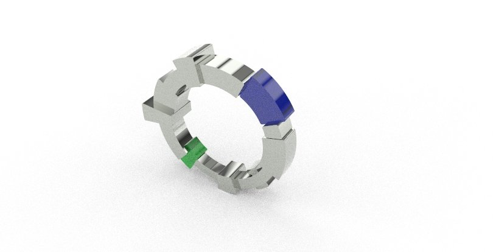
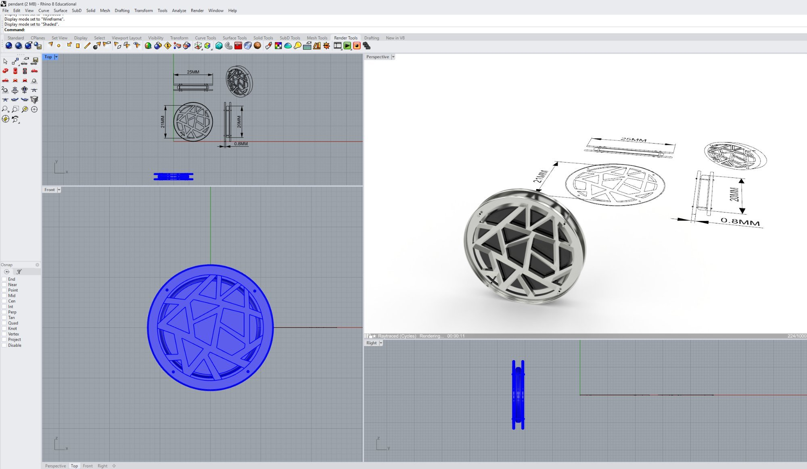
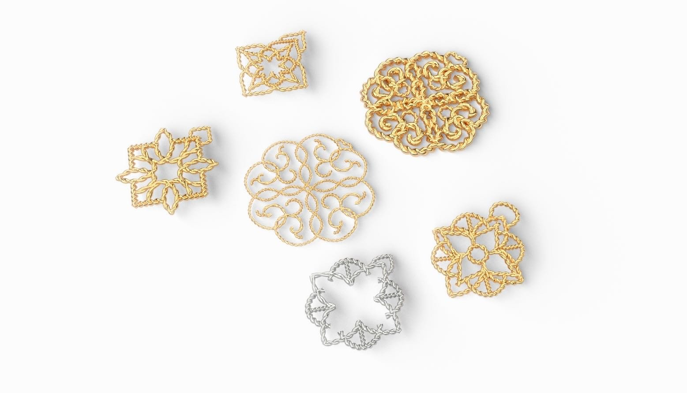

Museum Studies · Material Art & Design
From the jeweller's bench to the museum archive, bridging material craft with cultural stewardship.
About
I am a Master of Museum Studies candidate at the University of Toronto, with a Bachelor of Design in Material Art & Design from OCAD University and a Jewellery Methods Diploma from George Brown College. My practice sits at the intersection of hands-on craftsmanship and institutional research.
With training in jewellery fabrication, gemology, film photography, ceramics, and metalworking, I bring a maker's sensibility to collections management, curatorial work, and digital museum practice. This portfolio presents selected coursework and creative work from my studies in The Digital Museum (MSL1228H), exploring how museums can harness digital tools and strategies to engage broader audiences, preserve cultural heritage, and rethink institutional narratives.
MSL1228H · The Digital Museum
Digital Production Exercise
Digital Production Exercise
3.04 Reading Response
3.05 Reading Response
3.06 Reading Response
Selected Work
Film Photography · Nikon F3 HP





Jewellery Design & Fabrication




